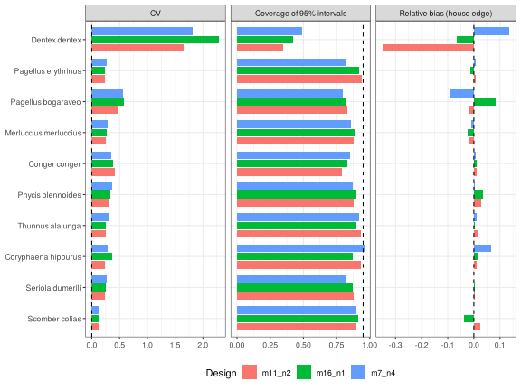
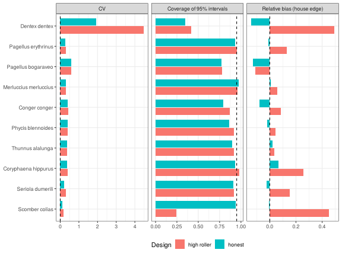

casimir teaching cards: bet, roll, spin
Source:vignettes/casimir-03-teaching.Rmd
casimir-03-teaching.RmdEach card asks trainees to bet before they roll or spin. The cards follow the FAO training deck (Data Collection and Estimation of Fisheries Quantities: multi-stage sampling), then go beyond it to the field problems real surveys have.
library(casimir)
fish <- cas_fishery(island_x(), seed = 1)
year <- max(fish$years)
truth <- cas_truth(fish, years = year, by = "year")Card 0: one site-day by hand
Bet. At the busiest site-day of the sample, what is the catch of Scomber colias by canoes? Work it out from Forms A to C, then check.
s <- draw_sample(fish, cas_design(), seed = 1)
e <- estimate_catch(s)
busy <- names(which.max(tapply(s$A$N, s$A$psu, sum)))
s$A[s$A$psu == busy, ]
#> psu date site site_type quarter segment N boats
#> 109 P037 2025-07-02 LS8 Beach 3 canoe 11 22
#> 110 P037 2025-07-02 LS8 Beach 3 small_motor 2 5
#> 111 P037 2025-07-02 LS8 Beach 3 large_motor 0 0
b <- s$B[s$B$psu == busy & s$B$segment == "canoe", ]
c0 <- s$C[s$C$psu == busy & s$C$species == "Scomber colias", ]
merge(b, c0[c("trip", "w_s")], all.x = TRUE)
#> trip psu segment vessel hours W w w_s
#> 1 148908 P037 canoe V66 4.2 22.5 10.00 10
#> 2 148937 P037 canoe V135 2.2 0.0 0.04 NA
#> 3 149268 P037 canoe V75 2.3 189.9 10.00 10
e$psu[e$psu$psu == busy & e$psu$segment == "canoe", c("N", "n", "Scomber colias")]
#> N n Scomber colias
#> 109 11 3 778.8Steps 1 and 2. Each landing: species share of the subsample times the landed weight. The site-day: mean of the sampled landings times the number counted (N/n x sum).
Card 1: from site-days to the stratum
Bet. The busy site-day above is one of M site-days in its stratum. What happens to the estimate if days without landings are left out?
ev0 <- replicate_design(fish, cas_design(), R = 100, seed = 2)
ev1 <- replicate_design(fish, cas_design(), R = 100, seed = 2,
artefacts = artefacts(dropped_zeros = TRUE))
data.frame(species = ev0$summary$species,
bias_all_days = round(ev0$summary$rel_bias, 2),
bias_dropped_zeros = round(ev1$summary$rel_bias, 2))
#> species bias_all_days bias_dropped_zeros
#> 1 Dentex dentex -0.03 -0.03
#> 2 Pagellus erythrinus -0.05 -0.03
#> 3 Pagellus bogaraveo -0.04 -0.02
#> 4 Merluccius merluccius -0.01 0.01
#> 5 Conger conger 0.05 0.07
#> 6 Phycis blennoides 0.02 0.05
#> 7 Thunnus alalunga 0.02 0.04
#> 8 Coryphaena hippurus -0.01 0.02
#> 9 Seriola dumerili 0.02 0.03
#> 10 Scomber colias 0.01 0.02Zeros are data. Dropping empty days makes M/m raise only the busy days. On Island X most site-days have landings, so the effect is small here; at small sites, or in the off season, empty days are common and the bias grows.
Card 2: days or boats?
Bet. For about the same cost: many site-days with one landing per segment, or few site-days with several?
designs <- days_vs_boats(budget_m = 16, n = 1, steps = 3)
sapply(designs, design_cost, fishery = fish)
#> m16_n1 m11_n2 m7_n4
#> 1344 1320 1344
cmp <- compare_designs(fish, designs, R = 100, seed = 3)
plot_eval(cmp)
It depends on the fishery and the costs. On Island X the landings of one day differ a lot (different boats, tactics and grounds) and a visit costs four hours, so few site-days with several landings each are about as precise as many site-days with one landing each, for much less. Look at the realised cost too: at small sites fewer than n boats land, so designs with a large n cost less than planned.
Card 3: find the high roller
Bet. One enumerator picks the biggest boats. Which species are over-estimated, and by how much?
ok <- replicate_design(fish, cas_design(), R = 100, seed = 4)
hr <- replicate_design(fish, cas_design(), R = 100, seed = 4,
artefacts = artefacts(high_roller = 1))
plot_eval(rbind(data.frame(design = "honest", ok$summary),
data.frame(design = "high roller", hr$summary)))
Warning flag. Sampled landings much larger than the typical landing at a site. Bias does not shrink with more samples.
Card 4: who lands after lunch?
Bet. The enumerator leaves at 13:00. Which segment and which species are under-estimated?
sw <- replicate_design(fish, cas_design(), R = 100, seed = 5,
artefacts = artefacts(short_watch = 13))
data.frame(species = sw$summary$species, bias = round(sw$summary$rel_bias, 2))
#> species bias
#> 1 Dentex dentex -0.65
#> 2 Pagellus erythrinus -0.41
#> 3 Pagellus bogaraveo -0.87
#> 4 Merluccius merluccius -0.90
#> 5 Conger conger -0.46
#> 6 Phycis blennoides -0.94
#> 7 Thunnus alalunga -0.93
#> 8 Coryphaena hippurus -0.55
#> 9 Seriola dumerili -0.37
#> 10 Scomber colias -0.33Long trips land late. Large motor boats fish far offshore for pelagic species and land in the afternoon; a short watch misses them.
Card 5: two routes to the catch
Bet. The frame survey is three years old. Which route is biased: raising by site-days, or CPUE x effort?
a <- artefacts(old_frame = 3)
psu <- replicate_design(fish, cas_design(), R = 100, seed = 6, artefacts = a)
eff <- replicate_design(fish, cas_design(), R = 100, seed = 6, artefacts = a, route = "effort")
data.frame(species = psu$summary$species,
bias_psu = round(psu$summary$rel_bias, 2),
bias_effort = round(eff$summary$rel_bias, 2))
#> species bias_psu bias_effort
#> 1 Dentex dentex 0.23 0.33
#> 2 Pagellus erythrinus 0.07 0.14
#> 3 Pagellus bogaraveo -0.18 -0.11
#> 4 Merluccius merluccius -0.05 -0.01
#> 5 Conger conger 0.07 0.15
#> 6 Phycis blennoides -0.03 0.01
#> 7 Thunnus alalunga -0.02 0.01
#> 8 Coryphaena hippurus 0.04 0.07
#> 9 Seriola dumerili 0.01 0.06
#> 10 Scomber colias 0.01 0.10